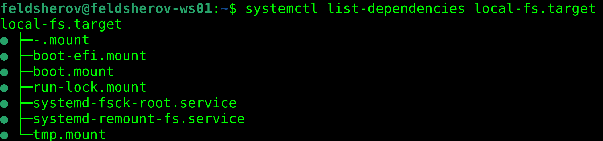

Hi, I am Slava!
Graphs are everywhere!
Graph is dots connected by lines.

Graph is two sets...

Graph is tasks and dependecies between them!

Disclaimers!
Nice abstruction to structure the code and .....
Parallelism!

Portret of our client
C++ binary or library
With tasks and dependecies between them inside
Developed by large team!
Generic requirements
Code readable
Easily to add tasks and edges
Domain specific requirements
Control over what executed and where
Conditions on edges
Async operations in task
Data transfer through edges
Streaming of the partial results
Cycles O_o
Futures recap [2] the fix
Ooops, I did a graph!

Let's make the task more real! [1]
Let's make the task more real! [2]
Let's make the task more real! [2]
Looks awesome! But who will exectute it?
What is about non-ugly fix?
future.then from std::experimental::future
... or boost
... or custom thread pull respecting dependecies
Futures conclusions
Hard to prevent futures spaghetti.
Not easy to add a new tasks to large graphs!
Focus on tasks, not edges!
Target state
Declare result data type
List all types you depend on
Implement business logic in you cpp file
.... C++ magic ....
Graph is ready to be executed
Attention slideware ahead!
Code wise target execution
Why do we need this?
How to achive it?
Conclusions
Works really nice for a certane scope of tasks!
Requires quite a lot of hustle to make it work.
Not all "domain specific" requirements are feasible
... but with coroutines a few more items may be supported.
Very nice overall but "hardly composable".
Stuff I haven't seen in prod, but I would want to try!
Conclusions
There are much more async execution libraries.
Huge graphs are not trivial to declare.
P2300 should make decomposition of graphs easier.
All talk in one slide
C++11 futures are good, but not enough.
You can build a nice graph of tasks framework today.
Link time registration of tasks is nice in huge teams.
Get/Put is nice for type-safety vs. isolation.
Corutines can bring async tasks to you graphs.
P2300 have chanes to make everything composable.